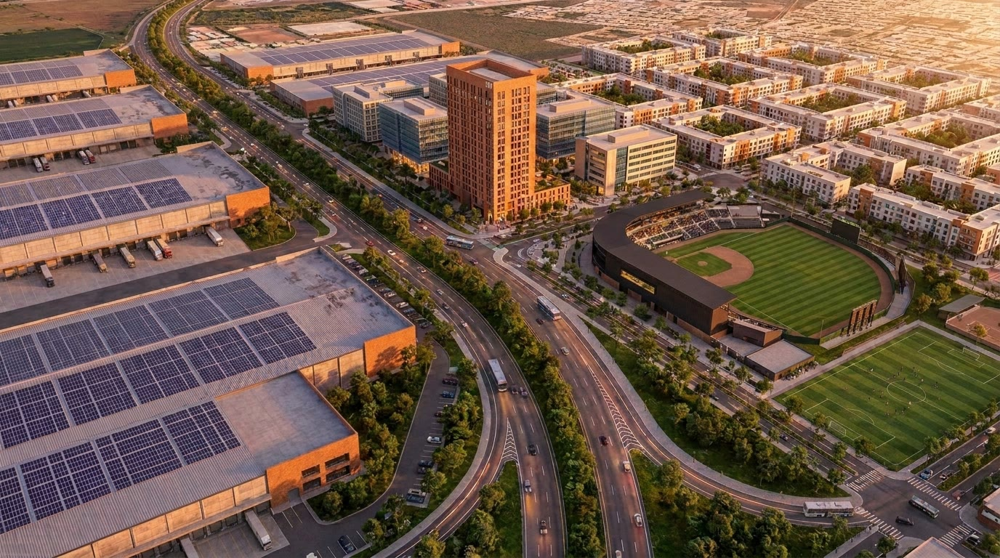
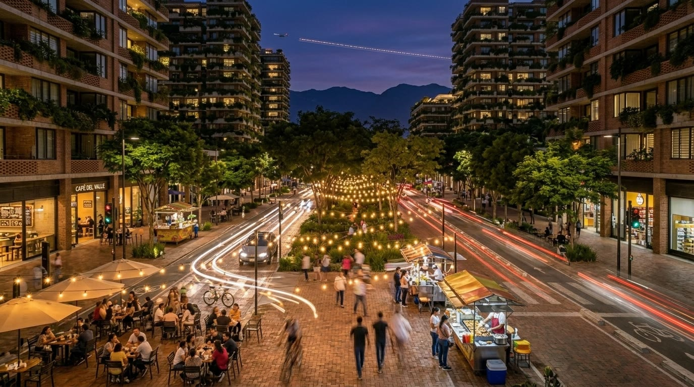
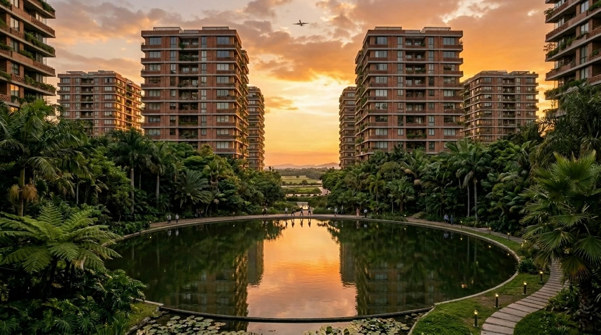
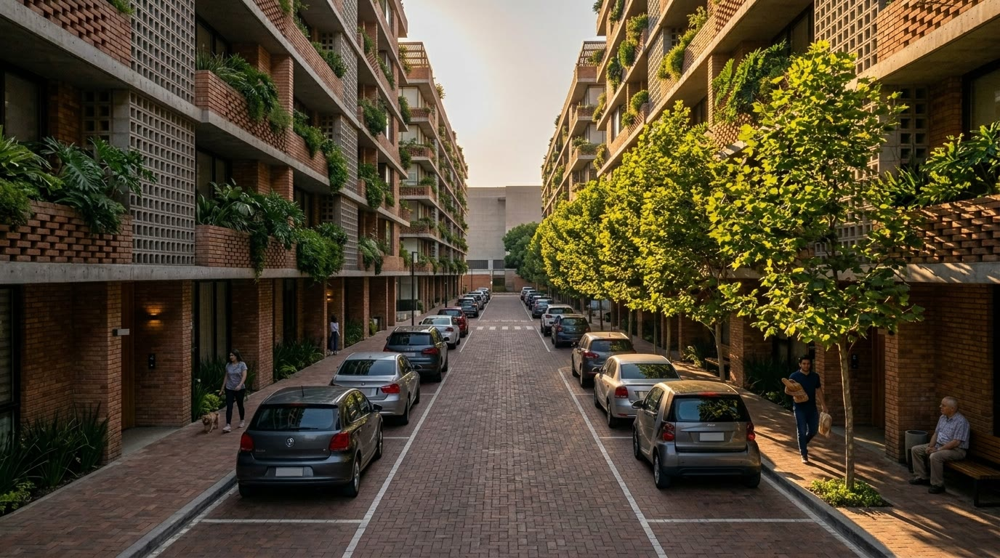
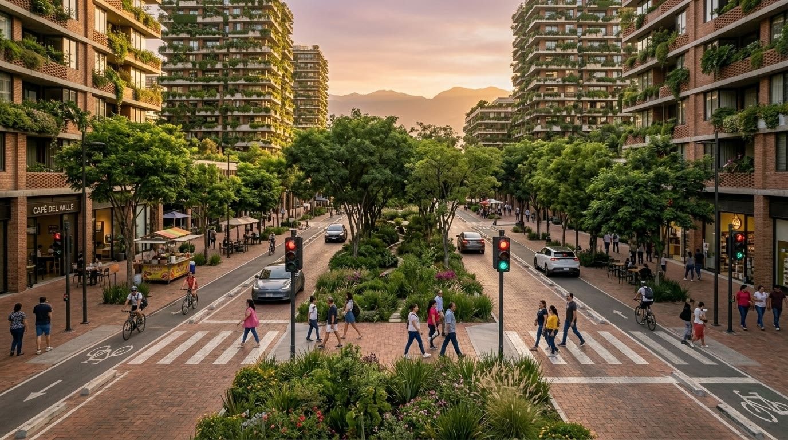
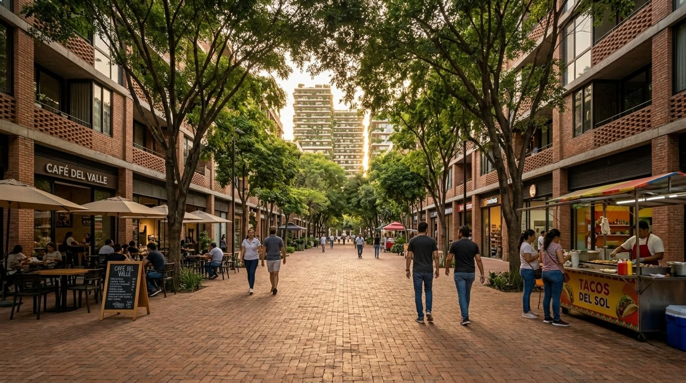
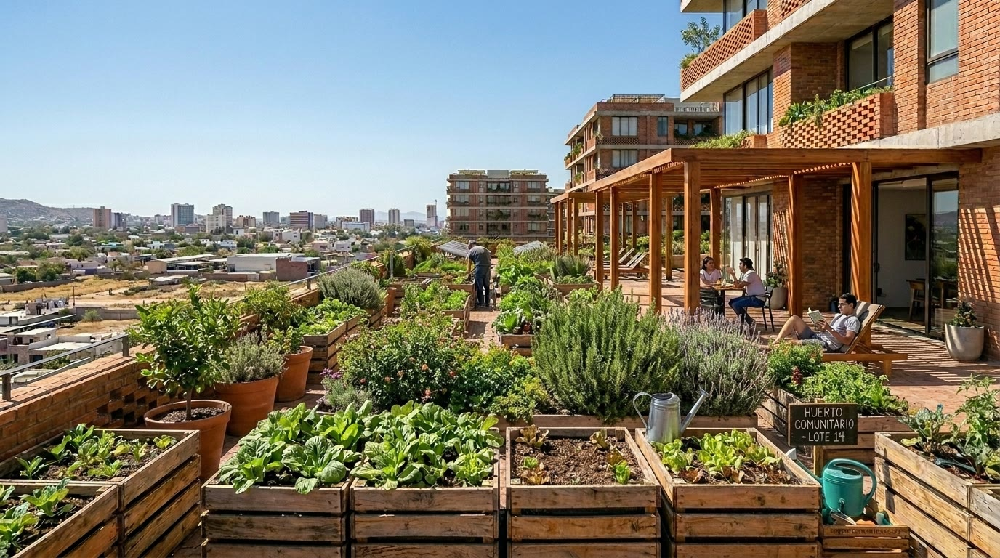
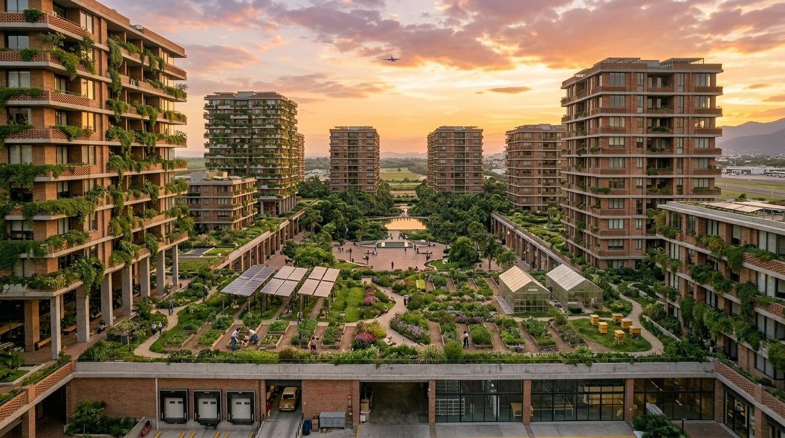
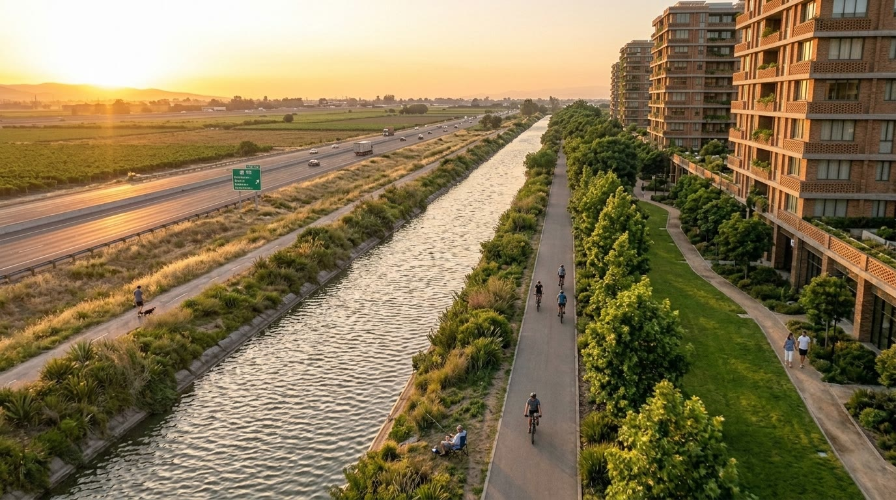
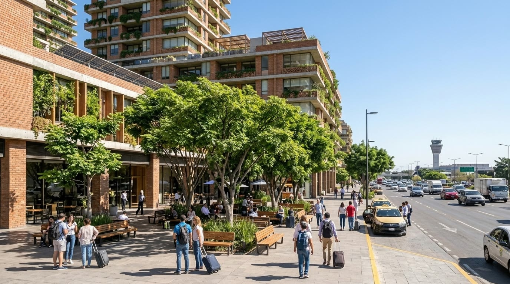

Master’s thesis, 2020. A 95-hectare master plan next to the airport in Culiacán, from farmland to mixed-use.

From farmland to mixed-use, next to the airport.
The views show brick residential towers with balcony planters, community gardens, a canal and park edge, and the airport on the horizon. No further program figures are published here.
NATURA is a master’s thesis master plan for 95 hectares in Culiacán, Sinaloa, Mexico, next to the airport. The site is shown as a shift from farmland to mixed-use: logistics with rooftop photovoltaics, offices, brick residential blocks, sports fields, and a landscaped public realm.
Visible themes in the drawings: brick residential architecture, balcony planters, community gardens (including a rooftop huerto comunitario), a canal and bikeway at the park edge, and airport adjacency.








